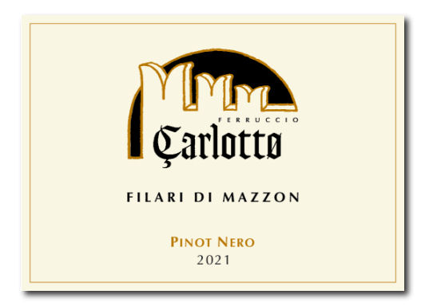
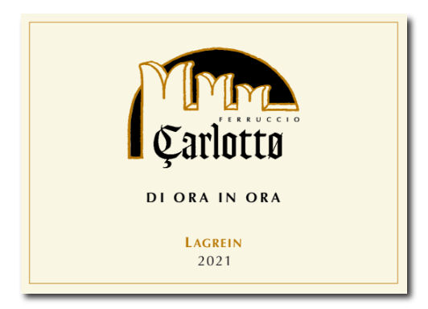
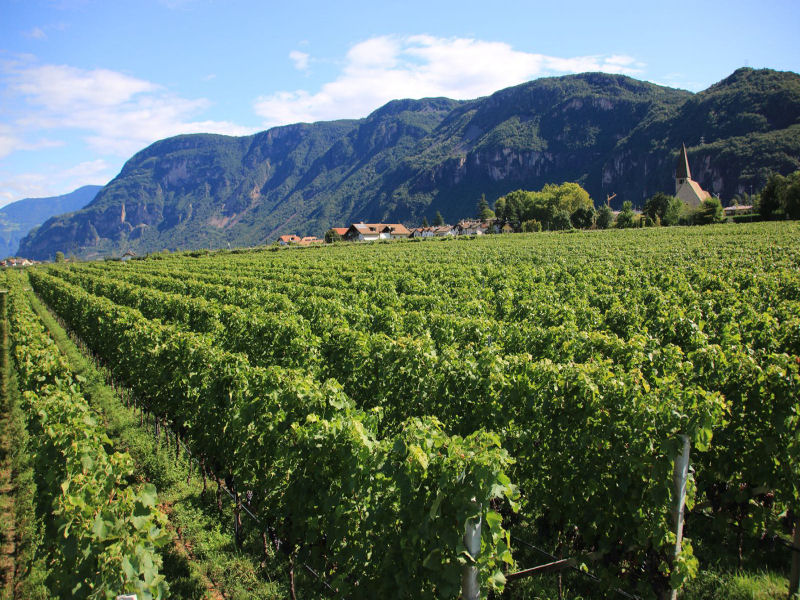

01 Pinot Nero · Alto Adige DOC
Filari di Mazzon Pinot Nero
- Vigneti
- 4 ha a Mazzon
- Quota
- 300–450 m
- Ceppi per ettaro
- 7.800–9.200
- Affinamento
- 12 mesi, botti grandi e barrique
- Bottiglie
- circa 30.000
- Prima annata
- 2001

Al naso frutto dolce; in bocca sapido e rotondo, tannino fine e fitto, lampone e cassis. Dalla collina di Mazzon, ai piedi del Parco naturale Monte Corno.
02 Principio
Il vitigno giusto nel posto giusto.
Mazzon
Pinot Nero
Sulla collina di Mazzon, sinistra Adige. Suolo calcareo fluvio-glaciale ricco di scheletro, argilla intorno al 15%.
Ora
Lagrein
Sul conoide alluvionale del Rio Nero, a 230 m. Terreno sciolto e sassoso, di porfido e calcari, che trattiene il calore.
6 ettari
Una cantina di famiglia
70% Pinot Nero, 25% Lagrein, 5% Schiava. Metodi tradizionali in vigna e in cantina.
03 Storia
Tre generazioni in vigna, a Mazzon e Ora
Umberto Carlotto inizia a coltivare a mezzadria il maso Schloßhof a Mazzon, vicino a Castel Caldiff. Per 50 anni ne cura le vigne con il fratello e il figlio Ferruccio.
Ferruccio e la figlia Michela iniziano a vinificare le proprie uve. È la prima annata del Lagrein “di ora in ora”.
Prima annata imbottigliata del Pinot Nero “Filari di Mazzon”.
04 I vini
Tre vini, sei ettari
Circa 50.000 bottiglie l'anno da 6 ettari. Ogni vino ha la sua scheda tecnica in PDF.


Filari di Mazzon · Pinot Nero
Alto Adige DOC. Frutto dolce al naso; sapido, rotondo, tannino fine e fitto, lampone e cassis. Circa 30.000 bottiglie.
| Pinot NeroFilari di Mazzon | Lagreindi ora in ora | Schiava | |
|---|---|---|---|
| Denominazione | Alto Adige DOC | Alto Adige DOC | Vigneti delle Dolomiti IGT |
| Vigneti | Mazzon, 4 ha | Ora, 1,7 ha | Ora, circa 0,2 ha |
| Quota | 300–450 m | 230 m | circa 200 m |
| Allevamento | Guyot, 7.800–9.200 ceppi/ha | Pergola e guyot, 6.500 ceppi/ha | Guyot, 6.500 ceppi/ha |
| Malolattica | Tini di rovere | Acciaio | Acciaio |
| Affinamento | 12 mesi botti grandi e barrique, 6 mesi in bottiglia | 12 mesi botti grandi e barrique, 6 mesi in bottiglia | Alcuni mesi in acciaio, imbottigliato la primavera dopo |
| Bottiglie | circa 30.000 | 19.000 | circa 2.000 |
| Prima annata | 2001 | 2000 | 2000 |
05 Le vigne del Pinot Nero
Sette vigne, un solo Filari di Mazzon
Il Pinot Nero nasce da sette appezzamenti sulla collina di Mazzon, piantati tra il 2000 e il 2019. Macerazione di circa 10 giorni con rimontaggi e follature quotidiani.
- Paggen2000
- Oberes Langfeld2000
- Kreuzl2010
- Keilackerl2013
- Loch2014
- Unteres Langfeld2015
- Auf dem Bichl2019
06 Immagini
07 Visite e domande
Si visita su appuntamento
Si può visitare la cantina?
Dove si trova la cantina?
Che differenza c'è tra il Pinot Nero e il Lagrein?
Ci sono le schede tecniche dei vini?
08 Contatti